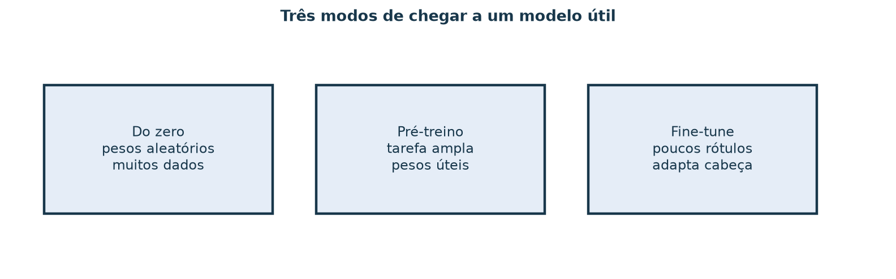
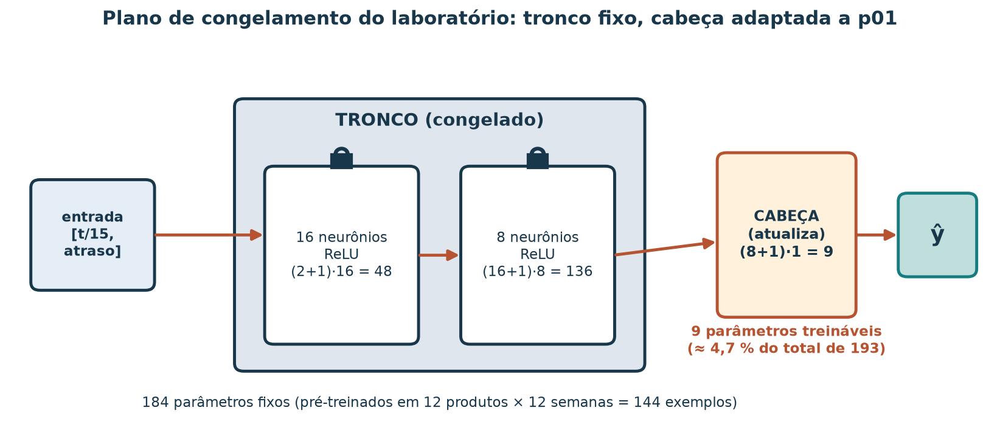
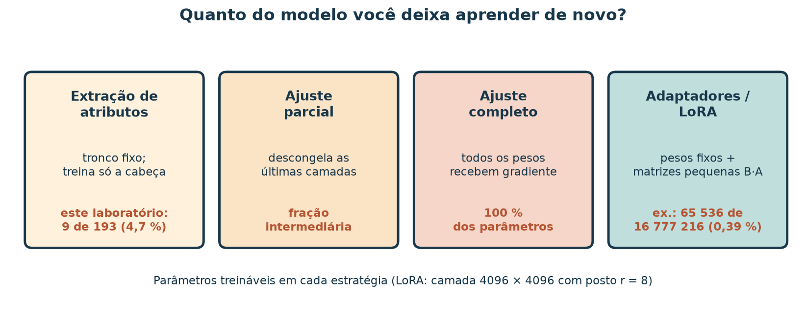
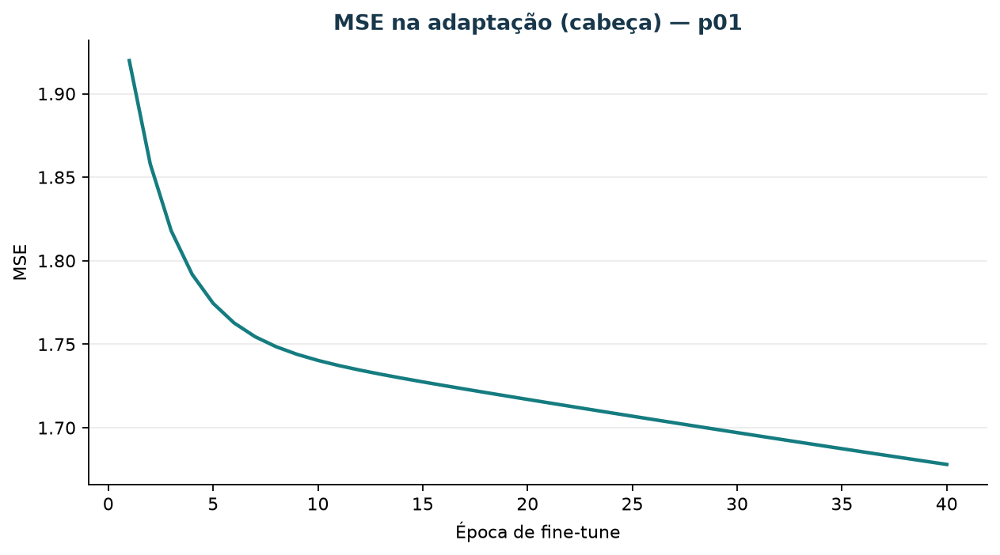
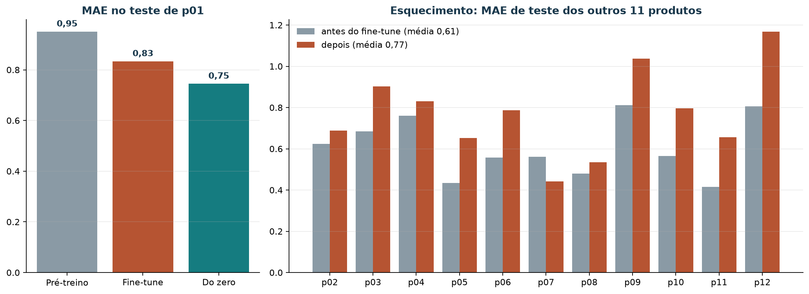

Fine-tuning: adaptar um modelo pré-treinado em vez de começar do zero
Leia a versão web com o explorador interativo incorporado.
A loja de artesanato tem doze produtos com histórico semanal. Quando chega uma peça nova, ou quando um produto muda de comportamento, a equipe se pergunta: vale a pena reaproveitar o que um modelo aprendeu com todo o catálogo e só ajustar para aquela peça? Essa é a ideia do fine-tuning (ajuste fino), o mesmo gesto que se faz com modelos grandes de imagem e de linguagem baixados de repositórios públicos.
Ao concluir este tutorial, você deverá conseguir distinguir treino do zero, pré-treino e ajuste fino; escrever um plano de congelamento (que partes do modelo ficam fixas e quais são atualizadas); contar os parâmetros treináveis; medir o resultado antes e depois do ajuste no mesmo teste; e verificar se o ajuste fez o modelo esquecer o que sabia sobre os outros produtos. Você também conhecerá, como leitura, o LoRA, a técnica que torna o ajuste de modelos de linguagem viável em hardware modesto.
O laboratório roda em CPU, em menos de um segundo, sem baixar pesos da internet: o “modelo pré-treinado” é uma MLP pequena treinada na própria série sintética. Ele reproduz o ritual do ajuste fino em miniatura; os números não indicam o que acontece com modelos de bilhões de parâmetros.
Roteiro de estudo
| Tempo sugerido | Atividade de estudo |
|---|---|
| 8 min | Três modos de chegar a um modelo útil |
| 10 min | Tronco, cabeça e o plano de congelamento |
| 10 min | Quanto do modelo aprende de novo: do congelamento ao LoRA |
| 12 min | Rodar o pré-treino, o ajuste e o treino do zero |
| 10 min | Ler antes, depois, do zero e o esquecimento |
| 10 min | Explorar o painel de fine-tuning |
| 10 min | Riscos, mitigação e exercício com resolução |
1. Três modos de chegar a um modelo útil

Figura 1 — O ajuste fino começa de pesos que já representam algo útil e usa poucos exemplos da tarefa nova.
| Modo | Ponto de partida | Dados usados | Quando faz sentido |
|---|---|---|---|
| Do zero | Pesos aleatórios | Só a tarefa alvo | Há dados suficientes da tarefa alvo |
| Pré-treino | Pesos aleatórios | Uma base ampla e relacionada | Construir representações reutilizáveis |
| Ajuste fino | Pesos do pré-treino | Poucos exemplos da tarefa alvo | A tarefa alvo tem poucos dados e se parece com o pré-treino |
O pré-treino e o ajuste fino formam a aprendizagem por transferência (transfer learning): o que foi aprendido numa tarefa é transferido para outra. Em visão, uma rede treinada no ImageNet aprende bordas e texturas que servem para classificar fotos de cerâmica. Em texto, um modelo de linguagem pré-treinado em grandes coleções de texto aprende regularidades da língua que servem para classificar mensagens de clientes.
2. Tronco, cabeça e o plano de congelamento
Uma rede pode ser lida em duas partes:
- o tronco (backbone), as camadas escondidas que transformam a entrada numa representação ;
- a cabeça (head), a última camada, que transforma na resposta da tarefa.
Congelar uma parte significa não atualizar seus parâmetros durante o ajuste. Se o tronco está congelado, só e recebem gradiente. Para a perda ,
e a atualização é . Com o tronco fixo, a cabeça resolve uma regressão linear sobre atributos que o pré-treino aprendeu.

Figura 2 — O plano de congelamento deste laboratório. O tronco foi pré-treinado em 144 exemplos (12 produtos × 12 semanas); a cabeça é ajustada às 12 semanas de treino do Jarro.
Escreva o plano antes de treinar, em duas linhas:
Congela: as duas camadas escondidas (16 e 8 neurônios, 184 parâmetros). Atualiza: a camada de saída (9 parâmetros), por 40 épocas com .
3. Quanto do modelo aprende de novo?

Figura 3 — Estratégias de ajuste ordenadas pelo que você deixa mudar. O exemplo de LoRA usa uma matriz de pesos 4096 × 4096 com posto 8.
| Estratégia | O que é atualizado | Custo | Risco principal |
|---|---|---|---|
| Extração de atributos | Só a cabeça | Muito baixo | A representação do tronco pode não servir à tarefa nova |
| Ajuste parcial | As últimas camadas e a cabeça | Médio | Escolher quantas camadas liberar |
| Ajuste completo | Todos os parâmetros | Alto (memória para todos os gradientes) | Sobreajuste e esquecimento com poucos dados |
| Adaptadores / LoRA | Matrizes pequenas acrescentadas; pesos originais fixos | Baixo | Posto pequeno demais limita a adaptação |
LoRA em uma fórmula
No LoRA (Low-Rank Adaptation, Hu et al., 2022), uma matriz de pesos pré-treinada fica congelada, e o ajuste aprende uma correção de posto baixo:
Os parâmetros treináveis passam de para . Com e : de para , cerca de 0,39%. É por isso que se ajustam modelos de linguagem grandes em uma única GPU. Este laboratório não aplica LoRA; a fórmula está aqui para você reconhecer o termo e fazer a conta.
4. O experimento
Na raiz do repositório:
uv run python scripts/demo_fine_tuning_mlp.pyO script executa três treinos com a mesma arquitetura (2 → 16 → 8 → 1, ReLU), as mesmas entradas (tempo normalizado e atraso ) e o mesmo teste (semanas 12–15 do Jarro, demanda observada 4, 2, 2, 2):
- Pré-treino: 60 épocas de Adam nas semanas 0–11 dos 12 produtos (144 exemplos). Nenhuma semana de teste participa.
- Ajuste fino: copia os pesos do pré-treino, congela o tronco e aplica 40 passos de gradiente descendente à cabeça, só com as semanas 0–11 do Jarro.
- Do zero: a mesma arquitetura, com pesos aleatórios, treinada 60 épocas só nas semanas 0–11 do Jarro.
Resultado gravado em redes/resultado_fine_tuning_p01.json
(scikit-learn 1.9; o tempo de relógio varia com a máquina):
| Modelo | Previsões nas semanas 12–15 | MAE no teste de p01 |
|---|---|---|
| Pré-treino (antes do ajuste) | 1,64; 2,68; 1,62; 1,62 | 0,951 |
| Ajuste fino (cabeça) | 2,10; 3,27; 2,09; 2,08 | 0,834 |
| Do zero, só p01 | 2,55; 2,55; 2,50; 2,48 | 0,745 |
| MA(4) (referência) | 2,50; 2,75; 2,25; 2,50 | 0,750 |
O pré-treino leva cerca de 0,01–0,03 s e o ajuste, menos de 0,01 s.

Figura 4 — O MSE de treino durante o ajuste cai de 1,92 para 1,68 e ainda está descendo na época 40. Quarenta passos com deixam a cabeça a meio caminho.
Leitura honesta
- O ajuste ajudou em relação ao pré-treino. O modelo genérico prevê cerca de 1,6 linhas por semana, abaixo do nível do Jarro (média de treino 2,67); ajustar a cabeça eleva as previsões e reduz o MAE de 0,951 para 0,834.
- O treino do zero venceu o ajuste. Com 12 semanas, o Jarro tem tantos exemplos quanto cada produto do pré-treino. Não há escassez de dados para a transferência compensar, e o tronco aprendeu uma representação do produto “médio” do catálogo, que não é o Jarro.
- Nenhum dos três supera com folga a MA(4). O treino do zero (0,745) e a média móvel (0,750) empatam em quatro semanas de teste.
Ajuste fino costuma compensar quando a base de pré-treino é muito maior que a da tarefa alvo e as duas compartilham estrutura: milhões de imagens para ajustar com algumas centenas de fotos de cerâmica, por exemplo. O exercício pede que você formule esse caso para a loja.
5. O modelo esqueceu os outros produtos?
O tronco ficou congelado, mas a cabeça é compartilhada: os mesmos 9 parâmetros produzem a previsão de qualquer produto. Ajustá-los ao Jarro pode piorar os demais. Esse fenômeno se chama esquecimento catastrófico (McCloskey e Cohen, 1989). O script mede o MAE nas semanas de teste dos outros 11 produtos antes e depois do ajuste:
| Produto | p02 | p03 | p04 | p05 | p06 | p07 | p08 | p09 | p10 | p11 | p12 |
|---|---|---|---|---|---|---|---|---|---|---|---|
| Antes | 0,62 | 0,69 | 0,76 | 0,44 | 0,56 | 0,56 | 0,48 | 0,81 | 0,56 | 0,41 | 0,81 |
| Depois | 0,69 | 0,90 | 0,83 | 0,65 | 0,79 | 0,44 | 0,54 | 1,04 | 0,80 | 0,66 | 1,17 |
A média sobe de 0,609 para 0,772. Só
p07 melhora. Se a loja precisa de um modelo único para todo
o catálogo, o ajuste ao Jarro tem um custo visível nos outros produtos.
A mitigação mais simples é manter uma cabeça por
produto sobre o mesmo tronco congelado: o ajuste de uma cabeça
não altera as outras.
6. Explore o ajuste com BI
O explorador de redes
neurais tem um painel de fine-tuning com o MAE de p01
para pré-treino, ajuste e treino do zero, ao lado das barras de
esquecimento dos outros 11 produtos. Use-o incorporado à versão
web deste tutorial ou abra o HTML a partir de uma cópia local do
repositório. Consulte o roteiro
de exploração. Os outros painéis do mesmo explorador mostram as
curvas de treino de uma MLP rasa e o efeito da profundidade, como
contexto opcional.
Experimente o fine-tuning neste tutorial
Compare treino do zero, pré-treino e adaptação da cabeça. As 16 semanas são sintéticas.

Figura 5 — Espelho estático do painel 06. O ajuste melhora o Jarro em relação ao pré-treino e piora a maioria dos outros produtos.
Atividade no painel
- Qual produto teve o maior aumento de MAE depois do ajuste? Quanto?
- Algum produto melhorou? Proponha uma explicação para isso.
- Compare o ganho no Jarro (antes → depois) com a perda média nos outros produtos. O ajuste compensa para um modelo único do catálogo?
Resolução comentada: p12 passa de 0,81
para 1,17 (+0,36). p07 melhora de 0,56 para 0,44; elevar o
nível das previsões, que o ajuste fez para o Jarro, também aproximou as
previsões de p07 de sua demanda de teste. No Jarro, o MAE
cai 0,12 (0,95 → 0,83); nos outros produtos, a média sobe 0,16 (0,61 →
0,77). Para um modelo único, o ajuste não compensa; com uma cabeça por
produto, o Jarro poderia receber o ajuste sem afetar os demais.
7. Riscos e mitigação
| Risco | Como aparece | Mitigação |
|---|---|---|
| Sobreajuste na tarefa alvo | Perda de treino cai, MAE de teste sobe | Congelar mais, poucas épocas, parar cedo com um período de validação |
| Esquecimento | Pior desempenho nas tarefas antigas | Uma cabeça por tarefa; reavaliar as tarefas antigas depois do ajuste |
| Vazamento entre pré-treino e teste | Teste otimista porque o pré-treino viu o período avaliado | Pré-treinar só com semanas anteriores ao teste (como aqui) |
| Avaliação frágil | Conclusões trocam com a semente ou com uma semana | Mais semanas de teste; várias sementes; comparar com referências |
| Representação inadequada | O tronco não captura o que a tarefa nova precisa | Ajuste parcial ou completo; outro modelo pré-treinado |
| Licença e origem dos pesos | Pesos baixados com restrições de uso | Ler a licença e o cartão do modelo antes de ajustar |
8. Limitações
- O “pré-treino” usa a mesma série e a mesma tarefa, com apenas 144 exemplos. Ele reproduz a mecânica do ajuste fino, não sua vantagem típica de escala.
- O ajuste da cabeça é um gradiente descendente simples escrito no script, com 40 passos; outra taxa ou mais passos mudariam o resultado.
- Modelos de visão (
torchvision) e de linguagem (transformers) usam o mesmo padrão tronco/cabeça, mas exigem baixar pesos de centenas de megabytes ou mais. Eles ficam como leitura nas referências.
9. Exercício: plano de ajuste para a loja
- Desenhe as três caixas (do zero, pré-treino, ajuste fino) com uma frase cada, aplicada à loja.
- Escreva o plano de congelamento do laboratório em duas linhas e calcule a fração de parâmetros treináveis.
- Se você descongelasse também a camada de 8 neurônios, quantos parâmetros seriam treináveis? Que fração do total?
- Copie do JSON o MAE antes, depois e do zero, e escreva uma frase: o ajuste ajudou, empatou ou piorou frente ao treino do zero? Por quê?
- Calcule os parâmetros treináveis de um LoRA de posto numa matriz e compare com o ajuste completo dessa matriz.
- Escolha dois riscos da seção 7 e uma mitigação para cada, com suas palavras. Descreva um caso da loja em que o ajuste fino provavelmente compensaria.
Resolução comentada
1. Do zero: treinar uma rede só com o histórico de uma peça. Pré-treino: treinar com o histórico de todo o catálogo. Ajuste fino: partir do modelo do catálogo e adaptá-lo à peça com poucas semanas.
2. Congela as camadas de 16 e 8 neurônios (184 parâmetros); atualiza a saída (9 parâmetros). Fração: .
3. parâmetros treináveis; .
4. Antes 0,951; depois 0,834; do zero 0,745. O ajuste melhorou o pré-treino, mas perdeu para o treino do zero: o Jarro tem tantas semanas quanto cada produto do pré-treino, e o tronco representa o produto médio do catálogo.
5. parâmetros, contra no ajuste completo: cerca de 1,04%.
6. Exemplo: sobreajuste — com 12 semanas, muitas épocas na cabeça fariam o modelo seguir o ruído; mitigação: poucas épocas e um período de validação separado do teste. Esquecimento — a cabeça compartilhada piorou 10 de 11 produtos; mitigação: uma cabeça por produto. Caso favorável: um produto novo com três ou quatro semanas de vendas, numa loja com centenas de produtos de histórico longo; o tronco pré-treinado traria o padrão sazonal do catálogo que quatro semanas não revelam.
Referências bibliográficas e roteiro de leitura
Consulta dos materiais on-line: 7 nov. 2026.
- GOODFELLOW, Ian; BENGIO, Yoshua; COURVILLE, Aaron. Deep learning. Cambridge, MA: MIT Press, 2016. Texto on-line em inglês. Para aprofundar: seção 15.2, aprendizagem por transferência.
- YOSINSKI, Jason et al. How transferable are features in deep neural networks? In: NeurIPS, 2014. arXiv:1411.1792. Para aprofundar: quais camadas transferem bem entre tarefas.
- HU, Edward J. et al. LoRA: low-rank adaptation of large language models. In: ICLR, 2022. arXiv:2106.09685.
- MCCLOSKEY, Michael; COHEN, Neal J. Catastrophic interference in connectionist networks: the sequential learning problem. Psychology of Learning and Motivation, v. 24, p. 109–165, 1989.
- KIRKPATRICK, James et al. Overcoming catastrophic forgetting in neural networks. PNAS, v. 114, n. 13, p. 3521–3526, 2017. DOI: 10.1073/pnas.1611835114.
- PYTORCH. Transfer learning for computer vision tutorial. Tutorial em inglês. Para consultar: congelar o tronco de uma rede de visão e treinar a cabeça (exige baixar pesos).
- HUGGING FACE. Fine-tuning a pretrained model. Documentação em inglês. Para consultar: o mesmo ritual com modelos de linguagem.
Artefatos no repositório
| Artefato | Papel |
|---|---|
dados/vendas_semanais.csv |
Série semanal sintética (12 produtos) |
scripts/demo_fine_tuning_mlp.py |
Pré-treino, ajuste da cabeça, treino do zero e esquecimento |
material/redes/resultado_fine_tuning_p01.json |
Números desta aula |
material/bi-redes/ |
Explorador interativo |
material/imagens/ (regenerar:
.local/scripts/gerar_figuras_redes.py) |
Diagramas de congelamento e de estratégias |